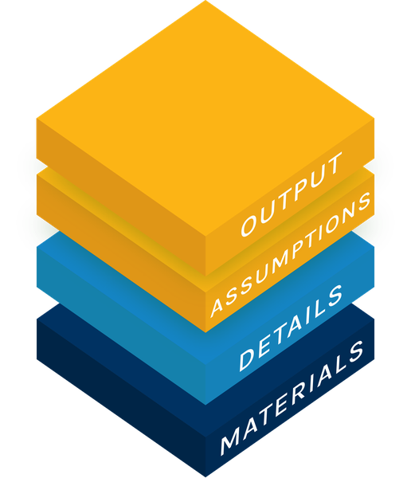

Open Policy Analysis for:
California Proposition 40, Reconciliation of the Two Analyses
Both numbers rest on decisions this comparison makes, not the authors. The BSZ number adds income tax effects to the paper's headline, the wealth tax alone ($103.8B). The JR number is the average of the authors' 100,000 draws, which spread from −$208.8B to $47.7B. Each keeps its own horizon, 5 years against for ever. The six decisions, in the report.
Both numbers measure the same thing: the wealth tax collected, counted at face value, plus the income tax from assets sold to pay it, minus the present value of the income tax lost (the report's definition). The Act lets the wealth tax be paid in five yearly installments, each later one with a deferral charge of 7.5% a year on the unpaid balance, which neither analysis counts.
What separates the two numbers
Move the explorer's BSZ panel to the JR values one group at a time, from left to right: the departed wealth, the chance the tax survives in court, the four inputs of the lost income tax, then the other inputs. The report gives all nine steps. Each amount is what its group changes when the dials move in this order. It is not a total, and its size depends on the order, because the inputs multiply each other: a departure matters more when more wealth is left to tax. The report's order-free check averages each input's step over every order the dials could move in. The amounts are rounded to two decimals and add up exactly to the JR estimate, −$38.98B. For scale, the lost income tax itself is worth $75.0B today in the JR analysis and $0.7B in the BSZ analysis. The equation's lost income tax term, $81.34B, is larger than the gap between those two, because avoidance moves last: until it does, the share lost is 50%, not 45%, since it still holds the BSZ movers' 5%. Moving avoidance gives $8.33B of it back (more in the report).

Three layers to understand the comparison analysis
Explore the main estimate and its assumptions →
Both main estimates on one definition, with a slider for each assumption they disagree on. Move one towards the other analysis's value and watch the estimate move. Each dial has its smaller value on the left, and each end names whose value it is. Tap or hover over a symbol for what it means.

A report and a slide deck. Both read the same exported files as this page and the explorer.

Materials for computational reproduction →
The R code that computes every number on this page, its Python twin (the same computation written again in Python and checked against the R result), the test suite, every exported CSV and the values copied from the PDFs, with their page. A guided summary is on the materials page, linked in the text below.

Boll, Saez, Zucman, NBER WP 35218 (Aug 2026) →
The Forbes list of 1 July 2026, a 10% allowance for avoidance and evasion (half of it people who moved out in time), no court discount, lost income tax counted for 5 years (this OPA's reading of BSZ's example).
Main estimate, net total: $106.8B Table 5 row 1, wealth tax: $103.8B (the paper prints $104B) JR analysis: a net present value estimateJaros and Rauh, NBER c15504 (Sep 2026) →
The Forbes list of 2025 grown to the valuation date, seven reported moves, a court discount, lost income tax for ever.
Main estimate, mean NPV: −$39.0BHow AI was used in this exercise, and what has been verified #
The numbers on this page reproduce and are tested; what is still being completed is the author's own review of each part, recorded in the last column below.
This work was a collaboration between the author and Claude Code (Opus and Sonnet models) across many sessions, not an AI working alone. The table records who led the work on each public object of the comparison, using the CRediT contributor roles. The author gave these answers in a questionnaire on 2026-10-15 (the slides again on 2026-10-16), all 14 roles and the verification question for each object; they were not inferred from commit history. The table groups the 14 roles into three: ideas and direction (conceptualization, methodology, supervision, project administration), doing the work (data curation, formal analysis, investigation, software, validation, visualization) and writing (original draft, review and editing). Funding does not apply. Resources (computing and analysis tools) are not in the table. Claude led them for the explorer and this page, the author led them for the slides, and they do not apply to the report and the repository. Each square in a cell is one role, coloured by who led it (key below the table). The last column is not part of CRediT. It records how closely the author has checked the object. The role-by-role answers are in CREDIT.md.
| Object | Ideas and direction | Doing the work | Writing | Human verification |
|---|---|---|---|---|
| Explorer Open Output | ||||
| Report Open Analysis | ||||
| Slides Open Analysis | ||||
| Repository Open Materials | ||||
| Overview page this page |
Human verification uses three levels: not reviewed, lightly reviewed (checked, but the author cannot yet explain it clearly) and reviewed (the author can explain it to others). The automated test suites are mechanical checks, not an outside review. No other person has verified this work, and the original authors have not reviewed it.
Which document versions are used #
This table gives the dated version of each document that the numbers on this site come from.2
| Document | Date | Base it uses |
|---|---|---|
| Rauh et al., SSRN 6340778 | 17 Mar 2026 | 212 billionaires, $1,894.8B, 2025 Forbes list (p.5) |
| Galle, Gamage, Saez, Shanske, response to Rauh | 17 Mar 2026 | answers Rauh's 4 Mar version, not the 17 Mar version this project reproduces as the JR first version |
| GGSS expert report | updated 20 Jul 2026 | 250 billionaires, $2,307B at 1 Jul 2026, non-citizens included, Ellison excluded |
| Boll, Saez, Zucman, NBER WP 35218 | Aug 2026 revision | same 1 Jul 2026 base; Table 5 adds missing billionaires and leaver scenarios |
| Jaros and Rauh, NBER c15504 | Sep 2026 | Rauh's base grown 7% to 31 Dec 2026, seven departures, litigation weight |
| LAO ballot analysis | for the 3 Nov 2026 ballot | no point estimate. It puts the wealth tax at tens of billions of dollars over several years, the ongoing income tax loss at under $1 billion a year, and administration costs at tens of millions a year (pp.2-3) |
The differences #
One row per group of inputs the two estimates differ on, as in the explorer.
Take the surveyThe survey is primarily for economists and policy analysts.
Most of these are empirical quantities, and none should depend on whether one supports or opposes a wealth tax. H and r are scenario choices. An expert should be able to judge which of the two values is more credible.
| Dial | The BSZ analysis's value and why | The JR analysis's value and why |
|---|---|---|
| W wealth | Forbes 2026. The Forbes list on 1 July 2026, 250 California billionaires worth $2,307B, or $2,157B without the non-US citizens (BSZ PDF p.24). Kind: data. | Forbes 2025. The 2025 list, 212 billionaires, grown 7%, the Act's growth figure, to the valuation date: $2,027B (chapter PDF pp.12-13). Kind: guesswork on data. |
| D departed a avoidance f share lost | D departed None named. Half of the 10% avoidance, 5% of the wealth, is people who moved in time (BSZ PDF p.24). Kind: guesswork on data.a avoidance 10.0%. A small allowance argued from enforcement (GGSS p.4). Kind: guesswork.f share lost 5%. The share of wealth assumed to leave, except named leavers, who pay little income tax for their wealth (BSZ PDF p.24). Kind: guesswork. | D departed 7 moves. Seven counted as moved in time, 28.6% of the wealth, on public reports (chapter PDF p.21). Kind: guesswork on data.a avoidance 0.0%. None beyond the departures it counts, since US securities are third-party reported (chapter PDF p.24). Its draws cover unreported moves. Kind: guesswork.f share lost 45%. More than the 28.6% of wealth counted as gone, since income tax need not leave in step with wealth (chapter PDF p.31). Kind: guesswork. |
| q litigation | 100%. No discount; the tax is assessed at face value, as written (GGSS p.11). Kind: guesswork. | 50%. A discount; the wealth tax is multiplied by the chance it survives in court (chapter PDF pp.19-20). Kind: guesswork. |
| C yearly income tax | $3.06B/yr. From California tax data, taking billionaires to have about half the income of the state's highest earners (BSZ PDF p.11). Kind: research. | $4.55B/yr. From California tax data, taking billionaires to be among the state's 212 to 500 highest earners (chapter PDF pp.28-30). Kind: guesswork. |
| H years r rate | H years 5 years. About the payment period, treating the departures as temporary (BSZ PDF p.27). Kind: scenario.r rate 3%. The rate this OPA applies to the BSZ analysis's 5-year loss, the middle of the JR range. BSZ give no rate. Kind: scenario. | H years for ever. Leavers are assumed not to return once the Act permanently lifts the intangible property tax cap (chapter PDF pp.30-32). Kind: scenario.r rate 2.73%. Worth the same as the JR draw of r − g, the interest rate minus the lost tax's growth (chapter PDF p.32). Kind: derived. |
| Non-citizens Real estate Asset sales | Non-citizens $150B. Taxed (GGSS 20 Jul 2026 p.2). The non-citizen billionaires are in the base, like any other California resident. Kind: data.Real estate 0.0%. No deduction (BSZ PDF p.24). Directly held real estate stays in the base. Kind: guesswork.Asset sales 1/3. Counted (BSZ PDF p.24). One third of the tax is paid by selling assets, and the gains on them are taxed. Kind: guesswork. | Non-citizens $0B. Not taxed, as too uncertain to collect (treaties, apportionment): the 28 non-citizens are left out of the base (chapter PDF pp.17-18). Kind: guesswork.Real estate 0.5%. A deduction (chapter PDF p.17). Directly held real estate, about 0.5% of the whole base, is taken out of it. Kind: data.Asset sales 0%. Not counted. No extra income tax from selling assets is included. Kind: guesswork. |
Each value's full source is in the report's table of differences.
Take the survey: which values are more credible?
The survey is primarily for economists and policy analysts. Share this survey with people you think have expertise in this area, to learn which values they find more credible.
Kinds: data (settled by observable facts), research (a published estimate), guesswork (an assumption with no data or study behind it), guesswork on data (a judgement applied to observed facts), scenario (a choice of which world is estimated) and derived (computed from the analysis's own inputs: the JR discount rate is the one rate worth the same as the authors' random draw of it). A source ending in .R is a script in the authors' repository. A kind says what evidence is behind a value, not whether the quantity itself can be observed.
Talks #
Presentations of this work. They are dissemination, not objects of the OPA, and the credit table above does not cover them.
- Transparency and AI in Policy Analysis: Lessons from an Open Policy Analysis of California's Wealth Tax Proposition. Slides for the PolicyEngine workshop, 30 October 2026, with a companion AI-generated audio narration (13 minutes).
1 Each analysis can be run at many settings. The BSZ overview leads with $106.8B, this OPA's net total. The JR overview leads with the printed −$38.9B. This page uses the exact average of the same formula, −$38.98B, shown as −$39.0B. The BSZ number is this OPA's net total over 5 years at 3%: the $103.8B wealth tax (Table 5 row 1), plus income tax from asset sales, minus income tax lost to leavers. BSZ's own headline is the wealth tax alone. The JR number is the authors' mean net present value in perpetuity. The paper prints −$38.9B, the average of one seeded run of 100,000 draws. The exact average of the same formula is −$38.98B, used throughout this page (report, Step 6 of the JR analysis's report). A seeded run starts the random draws from a fixed number, so it gives the same draws every time. The report gives the details.
2 Two other comparisons exist. Hoopes, J. L. (2026), "Galle v Rauh: Comparing Two Revenue Estimates for California Billionaire Taxation", SSRN Working Paper 6428578, uses earlier versions of both analyses. PolicyEngine's Proposition 40 calculator scores every Forbes billionaire in one model, offers each paper's assumptions as a setting, and bridges the gap between the two. It was built independently of this project and lands at +$106.2B and −$37.2B; its code is public. The report's appendix sets both beside this OPA's bridge.